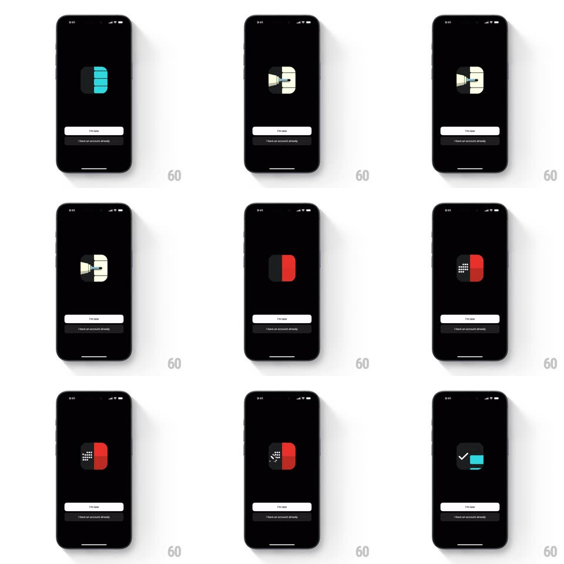

Media
Frame-by-frame

Rebuild this animation 1:1: Timepage's onboarding - the app icon morphs continuously through the Bonobo family icons (Timepage, a clock, a red-dotted icon, and back) while the sign-up buttons sit still below.

Rebuild this animation 1:1: Timepage's onboarding - the app icon morphs continuously through the Bonobo family icons (Timepage, a clock, a red-dotted icon, and back) while the sign-up buttons sit still below. ## Integration Integration: stack-agnostic spec - springs given as stiffness/damping, timed motions as duration + curve; map every value to your framework and animation library of choice. ## Scene Black onboarding screen: a single rounded-square app icon centered in the upper half, a white "I'm new" pill and a dark "I have an account already" pill at the bottom. ## Motion spec Pattern: looping icon morph, ~1.8s per transition. - Hold: each icon rests for 900ms. - Morph: the icon's internal shapes crossfade and reshape into the next icon (500ms, ease-in-out) - the teal-striped Timepage icon's elements slide and recolor into the cream clock face, then into the red/black dotted icon, then the purple check, looping. - The icon's container squashes 2% at mid-morph (scale 0.98 -> 1, spring ~380/20) for weight. - Buttons are static throughout; only the icon animates. ## Calibration - The morph happens inside the icon bounds - the rounded-square silhouette never changes. - Transitions are shape crossfades with matched geometry, not whole-icon fades. ## Reduced motion Whole-icon crossfade (300ms) on the same 1.8s cycle. ## Don't miss - The loop returns to the first icon seamlessly. - The slight squash at mid-morph is the only container motion.